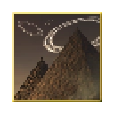

3DS Custom Themes
A while back I made a few 3DS themes based on things I like (well, pretty much just songs). They're kinda crappy but also cool and I might make more in the future, so why not share them too?
It's A Mistake 3DS Theme
2.47 MB - Click here to download
Travelling Without Moving 3DS Theme
2.67 MB - Click here to download

Guiding Lights 3DS Theme
2.81 MB - Click here to download
To install the themes, use this guide.
More goodies are on the way!